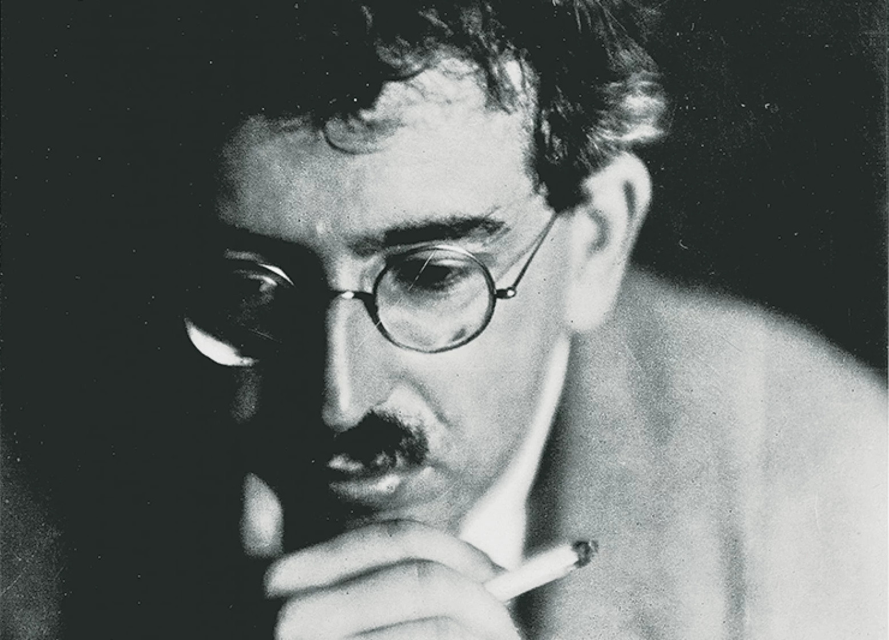
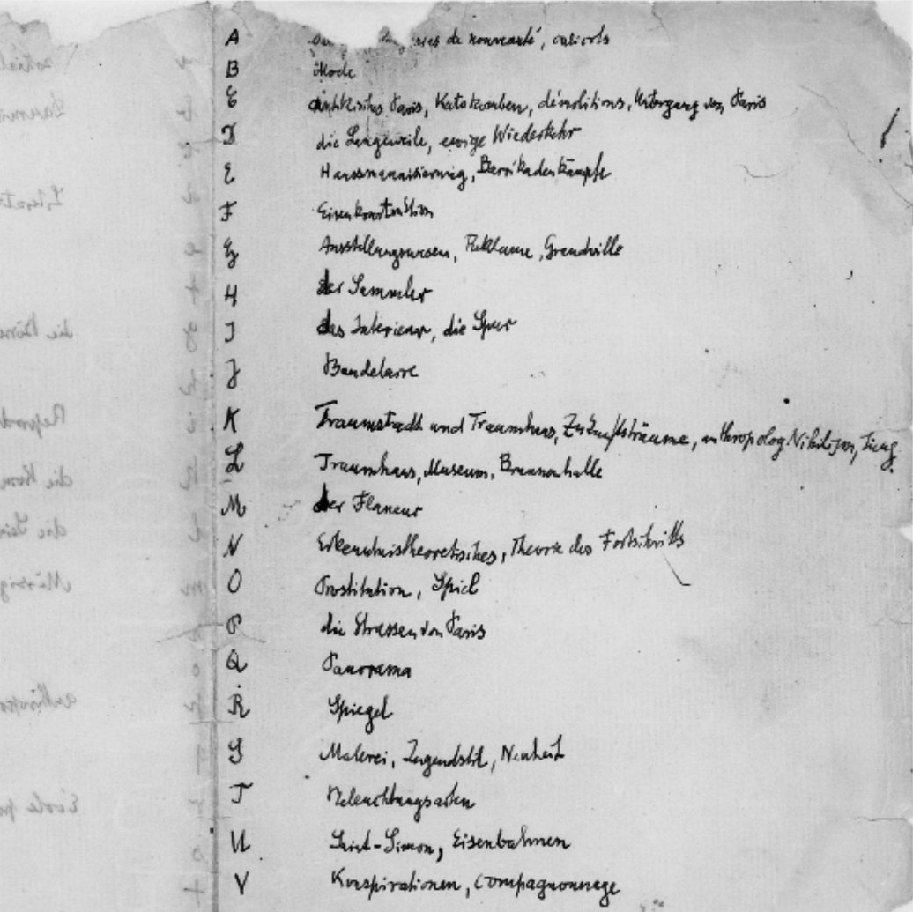

Home
About
Resources
THE PASSAGES OF THE PASSAGENWERK

Download the Arcades Project
"...it is the theater of all my struggles and all my ideas."

Read Apoorva Tadepalli's
The Arcades Project: Syllabus for the Internet
"The hollow mold from which the image of modernity was cast..."